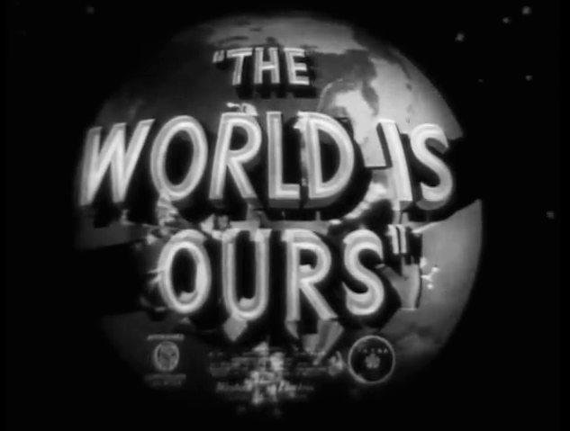
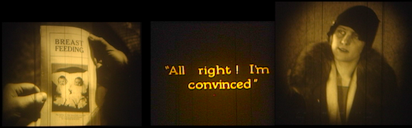

Wed/4.11 • Thurs/4.12 • Fri/4.13 • Sat/4.14
Friday • APRIL 13, 2012
PRESIDENTIAL CAMPAIGN FILMS and TV SPOTS David Schwartz (Museum of the Moving Image) on The Living Room Candidate
Charles Musser (Yale U) Three Stories of '48: The Truman Story (Universal), The Dewey Story (March of Time, RNC), and A People’s Convention (Union Films)
David Schwartz (Museum of the Moving Image) on The Living Room Candidate
Charles Musser (Yale U) Three Stories of '48: The Truman Story (Universal), The Dewey Story (March of Time, RNC), and A People’s Convention (Union Films). . . and an ADVOCACY CAMPAIGN FILM
Panel discussion (30 min.) with
Larry A. Jones (The Arc of Washington) on Children Limited (1951, Children's Benevolent League)
respondents Laura Kissel (U of South Carolina) and Faye Ginsburg (NYU Council for the Study of Disability)
HOLLYWOOD and the WORLD
Catherine Jurca (CalTech) The “Motion Pictures’ Greatest Year” Campaign: The World Is Ours (MPPDA, 1938) 20 min.
The World Is Ours (MPPDA, 1938) 20 min.
Ethan de Seife (Hofstra U) The Cartoon at the End of the World: Frank Tashlin andThe Way of Peace (Evangelical Lutheran Church in America, 1947) 18 min.
Dana Polan (NYU) moderated discussion (8 min.)
In a FAMILY WAY
Susan Courtney (U of South Carolina) Midcentury Screen Maps for Model Citizen-Spectators Family Camping through Forty-eight States, 1954-1961 (Robbins Barstow, 2000)Irene Lusztig (UC Santa Cruz) The Motherhood Archives: Maternal Education Films
Jennifer Horne (UC Santa Cruz) Welcome to the Nanny State: Carlyle Ellis and the U.S. Children’s Bureau, 1919-1926
Andrew Simpson (Catholic U) on scoring The Best-Fed Baby (1925)
Crystal Sanchez (NYU MIAP) moderator
COMMUNITY YOUTH FILMMAKING
Jay Schwartz (Secret Cinema) introduces The Jungle (1967, 12th and Oxford Street Film Makers)digitization and audio restoration by The MediaPreserve
Louis Massiah (Swarthmore College; Scribe Video Center) respondent[Note: This screening was moved to Saturday, so was not part of the discussion recorded here.]
Elena Rossi-Snook (NYPL Reserve Film and Video Collection) The Young Filmmaker’s Foundation Collection, ca. 1964-1979: The Flop (1967) and Aspirations (1971, Peri Muldofsky)Jonathan Kahana (UC Santa Cruz / NYU) moderator
RACE AND REBELLION
Mark Quigley (UCLA) One Friday (Rolf Forsberg, 1973) classroom discussion film imagines an all-out race war
Allyson Nadia Field (UCLA) and Jacqueline Stewart (Northwestern) The L.A. Rebellion Project:Daydream Therapy (Bernard Nicolas, 1977)
Q & A (joined by Gay Abel-Bay (NYU Kanbar Institute)
ARCHIVO MEMORIA: NATIONAL MEMORY RECONSIDERED
Audrey Young (Cineteca Nacional) One Film Survived the Fire: Cine Móvil (Javier Arroyo, 1976) preserved by Colorlab
Issa García Ascot (filmmaker) Un Modo de Decir (2011) Alice Lovejoy (U of Minnesota) Beyond Persuasion: The Czechoslovak Army Film StudioKřivé zrcadlo [Crooked Mirror] (Karel Kachyňa, 1956)
Metrum (Ivan Balad’a, 1967)
Příležitost [Opportunity] (Vojtěch Jasný, 1956)
Michal Bregant (Czech National Film Archive) introduces filmmaker Vojtěch JasnýSunniva O’Flynn (Irish Film Archive) Of Irish Persuasion Dail Bonds Film (1919)
Ireland 1922
Dublin of the Welcomes (1935)
Our Country (Liam O Leary/ Laoghaire, 1947/48)
[King of the Tribes] (Kevin Murray, ca.1950) amateur film of Travelers
Manners in Church (1963)
Donald Sosin, pianist
Seth Anderson (NYU MIAP) moderator